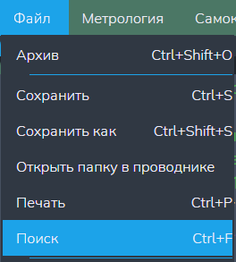
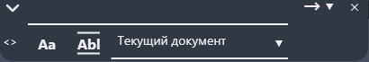

Функция "Поиск"
Данная функция открывает меню поиска
Внимание: данная кнопка доступна только когда открыт хотя бы один текстовый редактор!
Путь и вызов
Нахождение в программе
Верхнее меню → "Файл" → "Поиск"
Горячие клавишы
Ctrl + FНа изображении показано нахождение данной функции в программе:

Действия после нажатия
После нажатия горячих клавиш или ЛКМ по кнопке "Поиск" откроется меню поиска (рисунок 2).
